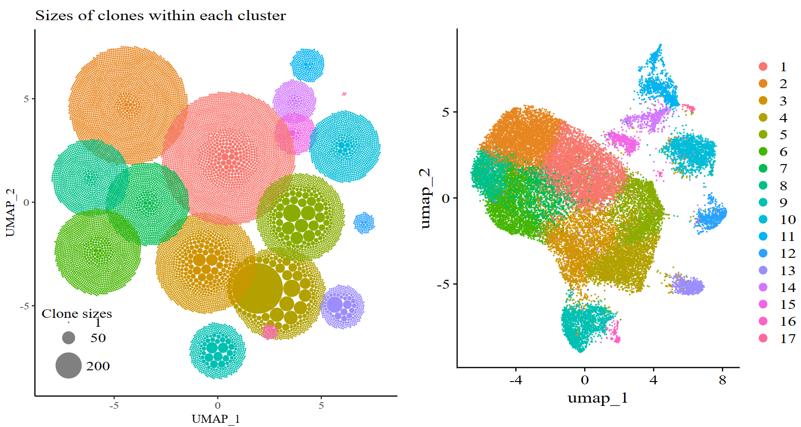

APackOfTheClones is an R package that extends the bioconductor scRepertoire package to produce easily customizable “ball-packing” visualizations of the clonal expansion of T-cells/B-cells in a Seurat object, based on its receptor library and single cell RNA sequencing data (for example outputs from 10X genomics’ single-cell immune profiling).
The baseline concept was first implemented in a study Ma et al.[1] by Murray Christian and Ben Murrell (@Murrellb) for nasal polyp TH cells. APackOfTheClones counts the clonotype frequencies for each seurat/umap cluster and produces a circle packing of the frequencies to intuitively represent clonal expansion. The packing for each cluster are then plotted with roughly the same coordinates as the original dimensional reduction and color. Below is an example of APackOfTheClones being used on an example seurat object for scRepertoire with its corresponding VDJ library:

Installation
APackOfTheClones is registered on CRAN. To install the latest stable release, simply run the following
install.packages("APackOfTheClones")For more details on installation methods and information on alternative/development versions, see vignette("APackOfTheClones-install")
Usage
The package extends the functionality of scRepertoire v2 by working with a seurat object’s corresponding T/B cell receptor library. To do this, read the scRepertoire vignette. Briefly, an scTCR-seq/scBCR-seq experiment (e.g. from a 10X genomics single cell immune profiling run) should be processed with scRepertoire::combineTCR / scRepertoire::combineBCR first. Then, it should be integrated into the corresponding seurat object either with scRepertoire::combineExpression.
To quickly produce the visualization, the vizAPOTC(your_combined_seurat_object) should give a reasonable visualization. There is an example seurat object included in the package which can be used with data("combined_pbmc"). The following codechunk is an example of how it can be done:
library(Seurat)
library(scRepertoire) # ensure v2 is installed: devtools::install_github("ncborcherding/scRepertoire")
library(APackOfTheClones)
# integrate the contigs with scRepertoire example data - this is identical to "combined_pbmc"
pbmc <- get(data("mini_contig_list", package = "scRepertoire")) %>%
combineTCR(
samples = c("P17B", "P17L", "P18B", "P18L", "P19B", "P19L", "P20B", "P20L")
) %>%
combineExpression(get(data("scRep_example", package = "scRepertoire")))
# produce the ball-packing plot with the default parameters
vizAPOTC(pbmc)
# there are many parameters to adjust, but most importantly, one can filter for
# subsets of the seurat object easily with keyword arguments corresponding to
# columns in the meta.data dataframe in the seurat object. Here, we filter for
# only the clones of the sample "P17" in a column named "orig.ident" that are only
# in seurat clusters 1, 3, and 4.
vizAPOTC(pbmc, orig.ident = c("P17B", "P17L"), seurat_clusters = c(1, 3, 4))For finer control of the visualization / other parameters, the data for a run can be stored and adjusted with RunAPOTC and AdjustAPOTC, then visualized with APOTCPlot, like so:
# using the same seurat object as before, run and store associated data,
# identifying it with a run id. If not, one will be generated.
pbmc <- RunAPOTC(pbmc, run_id = "default_run_1")
# plot the corresponding data with the run_id. If not provided, will use the latest run.
APOTCPlot(pbmc)
# adjust the sizes of the clones and move the 2nd cluster to (0, 0). Run id this time was
# left empty for no particular reason, but it will use "default_run_1" since its the latest
pbmc <- AdjustAPOTC(
pbmc,
new_clone_scale_factor = 0.25,
relocate_cluster = 2,
relocation_coord = c(0, 0)
)
# one can also do another run with different parameters and a different id.
pbmc <- RunAPOTC(pbmc, run_id = "run2", try_place = TRUE, repulse = FALSE)
# plot both runs side by side
library(cowplot)
cowplot::plot_grid(
APOTCPlot(pbmc, run_id = "default_run_1"), APOTCPlot(pbmc, run_id = "run2")
)Documentation
Comprehensive documentation, vignettes, and a changelog is deployed at https://qile0317.github.io/APackOfTheClones/
There are also the following vignettes that should be read in the following order:
vignette("APackOfTheClones")vignette("APackOfTheClones-runs")vignette("APackOfTheClones-shared")vignette("APackOfTheClones-utils")
All exported functions have function level documentation.
Contributing
Github pull requests from forked branches are more than welcome as it is mostly a solo-project at the moment. For major changes, please open an issue first to discuss what you would like to change. Please also make sure to update tests as appropriate.
An explanation of the algorithms will eventually be made publicly available in a either a pre-print or developer vignette.
References
[1] Ma, J., Tibbitt, C. A., Georén, S. K., Christian, M., Murrell, B., Cardell, L. O., Bachert, C., & Coquet, J. M. (2021). Single-cell analysis pinpoints distinct populations of cytotoxic CD4+ T cells and an IL-10+CD109+ TH2 cell population in nasal polyps. Science immunology, 6(62), eabg6356. https://doi.org/10.1126/sciimmunol.abg6356